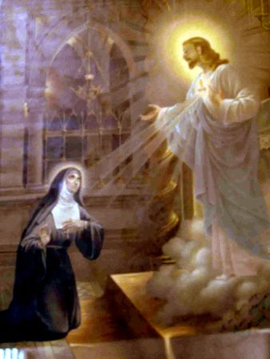
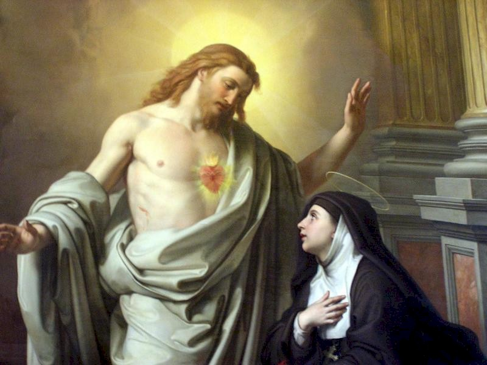
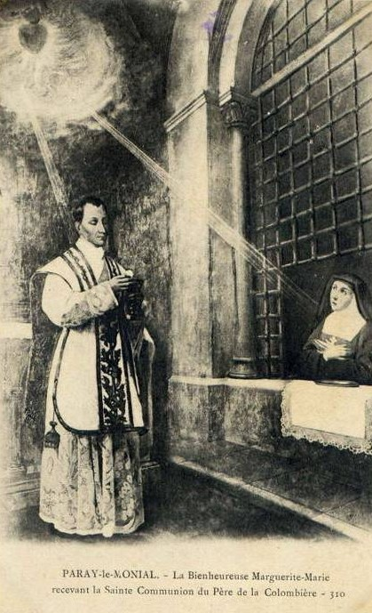
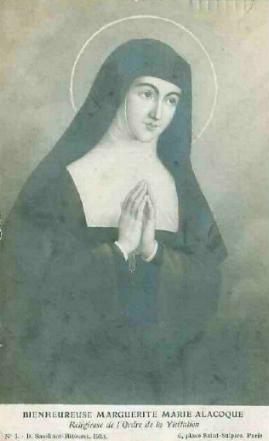

Era o dia 27 de Dezembro de 1673,
festa de São João Evangelista. Irmã Margarida Maria com um pouco 
"Eu me esqueci de mim mesma e do lugar onde estava e me abandonei ao DIVINO ESPÍRITO, entregando o meu coração a força do Seu Amor. Eu repousei por longo tempo em Seu Divino Peito, onde ELE revelou as maravilhas de Seu Amor e os segredos inexplicáveis de Seu SAGRADO CORAÇÃO, que estavam ocultos até então para mim. ELE me fez compreender pela primeira vez, de um modo bem afetivo e sensível, que não deixou nenhuma dávida, os efeitos que esta graça impressionante produziu em mim. Foi tão maravilhoso, que às vezes, pensando, temo duvidar que de fato isto tenha acontecido comigo. E a seguir descrevo as manifestações".
"ELE me disse":
"Meu DIVINO CORAÇÃO está tão apaixonado de amor pela humanidade, e por você em particular, que, não podendo mais conter em si mesmo as chamas ardentes da caridade, quer que sejam derramadas por todos os meios, e que se manifeste a todos, para lhes enriquecer com seus preciosos tesouros que lhe revelei. Suas chamas ardentes contêm as graças santificantes e salutares necessárias para libertar todas as pessoas do abismo da desonra e da perdição. Eu escolhi você como um abismo de indignidade e de ignorância para cumprimento deste grande desígnio, a fim de que tudo seja feito por MIM".
"Depois, ELE pediu o meu coração, o qual eu supliquei que o levasse. ELE então me colocou no interior do Seu Adorável CORAÇÃO. NELE me fez ver como um pequeno átomo, que se consumia naquela fornalha ardente. A seguir, daquela fornalha ELE retirou uma chama ardente em forma de coração e a colocou no lugar onde estava o meu coração, me dizendo":
"Eis, minha bem-amada, o precioso penhor de Meu Amor, que permanecerá na chaga de sua costela uma pequena centelha de suas vivas chamas, para lhe servir de coração e que irá consumi-la até o último momento. Seu ardor não se extinguirá, nem poderá encontrar refrescamento algum, semelhantemente o Sangue de Minha Cruz, ele lhe trará mais humilhação e sofrimento do que alívio. Isto porque EU quero que você a peça simplesmente, tanto para praticar isto que lhe ordenei como para lhe dar a consolação de derramar o seu sangue sobre a cruz das humilhações. E para marcar esta grande graça que lhe fiz agora, que não é imaginação, saiba, ela é o fundamento de todas aquelas que ainda lhe proporcionarei. Por outro lado, ainda que EU tenha de tornar a fechar a chaga de sua costela, a dor lhe permanecerá para sempre. E se até o presente, você não tem o nome de Minha escrava, EU lhe dou o nome de discípula bem-amada de Meu SAGRADO CORAÇÃO".
Disse a Irmã: - "Foi um favor tão grande e durou tanto tempo, que eu não sabia se estava no Céu ou na Terra, permanecendo verios dias, completamente incendiada e inebriada, fora de mim, que nem conseguia dizer uma palavra. Eu necessitava de me reanimar e voltar as minhas obrigações, mas me sentia sem forças e totalmente aniquilada. Não podia dormir, porque aquela chaga abaixo de minha costela, cuja dor era tão preciosa, me causava tão vivos ardores, que ela me consumia e me fazia queimar viva. Eu sentia uma tão grande plenitude de DEUS, que nem pude me expressar a minha Superiora, como eu gostaria".
Para uma alma profundamente humilde como era aquela de nossa Santa, que agonia interior deve ter sentido, se vendo forçada pela obediência, a confessar as Superioras o conteúdo daquelas revelações! Todavia, ela abandona todas as reflexões e com total obediência, descreve os fatos a Madre de Saumaise, que também recebeu outras confidáncias, não menos extraordinárias.
O CORAÇÃO DE JESUS ainda não tinha, falado sua última palavra a Irmã Margarida Maria. Ela ia ver muitos outros acontecimentos admiráveis, que ensejará as almas amorosas contemplar muito mais o SAGRADO CORAÇÃO.
"Este Coração Divino me foi apresentado", disse ela, "como num trono de fogo e de chamas, resplandecente de todos os lados, mais brilhante que o sol e transparente como o cristal. A chaga que eu recebi sobre a Cruz ali aparecia visivelmente. Havia uma coroa de espinho ao redor do DIVINO CORAÇÃO e uma Cruz em cima. Meu Divino Mestre me fez compreender que estes instrumentos de sua Paixão significavam que o Amor imenso que ELE tem por toda humanidade é a origem de todos os seus sofrimentos. Desde o primeiro instante da sua Encarnação (Mistério no qual DEUS se fez Homem), todos estes instrumentos estavam em Sua presença, e assim, desde aquele primeiro momento, a Cruz foi, por assim dizer, plantada em seu CORAÇÃO. ELE aceitou, desde então, todas as dores e humilhações que a Sua Santa Humanidade devia sofrer durante o curso de Sua Vida Mortal e mesmo todos os ultrajes, a pusilanimidade e tibieza das pessoas, que seu Amor pela humanidade tem suportado até o fim dos séculos, no SANTÍSSIMO SACRAMENTO. ELE me fez conhecer em seguida o grande desejo que ELE tinha de ser perfeitamente amado por todos, para lhes manifestar o Seu CORAÇÃO, e lhes dar, em qualquer época, este esforço de seu AMOR DIVINO, lhes propondo um objeto e um meio de Devoção tão próprio para eles se empenharem em amá-LO. E para amá-LO solidamente, lhes abriu todos os tesouros do Seu Amor, da misericórdia, da graça, da santificação e da salvação, a fim de que todos aqueles que quiserem seguir os Seus Divinos Passos buscando o Seu Caminho, toda honra e amor lhes será possível. Porque seráo aperfeiçoados e enriquecidos com profusão pelos Divinos Tesouros, os quais, ELE é a origem fecunda e é o SENHOR".

Continua a Irmã: - "ELE ainda me assegurou que apreciou com singular prazer ser honrado sob a figura deste CORAÇÃO de Carne, o qual ELE queria que a imagem fosse exposta em público, a fim de tocar o coração insensível da humanidade, me prometendo que derramará todos os tesouros das Suas graças e bênçãos com fartura, sobre o coração daqueles que O honrassem. E que também, em todos os lugares onde esta imagem fosse exposta, para ser honrada, ela atrairá todas as espécies de bênçãos sobre os visitantes". (Também é o caso da entronização da imagem do SAGRADO CORAÇÃO DE JESUS nas residáncias).
"Todavia, eis aqui, o que me causou uma profunda dor no coração, a qual me deixou mais sensível que todas as outras aflições, sobre as quais já falei: foi quando este amável CORAÇÃO me disse as seguintes palavras":
"Eu tenho uma sede ardente de ser honrado pela humanidade no SANTÍSSIMO SACRAMENTO, mas EU não encontro quase ninguém que se esforce, conforme o Meu desejo, de ME saciar, usando de reciprocidade amorosa COMIGO".
Em 1674, a Serva de DEUS não estava mais como segunda enfermeira, ela foi nomeada "Mestra das Irmãs de Pequeno Hábito" (Eram moças que desejavam seguir a vida religiosa, mas não tinham a idade mínima exigida. Frequentavam o Mosteiro e tinham algumas obrigações, objetivando ser despertado nelas o verdadeiro germe da vocação). O método de educação de Margarida era direto e simples: inculcava naquelas almas jovens o horror ao vício, estimulava o amor pelas virtudes e principalmente o real amor a DEUS, tais eram os seus princípios. Ela era indulgente e boa na repreensão das faltas de suas pequenas alunas. Na verdade, tudo era perdoado facilmente, a exceção da mentira e dos acordos (das tramas), que vivamente ela corrigia. Várias vezes a Irmã Margarida foi encarregada daquelas que alguém denominava de queridas pequenas Irmãs do Mosteiro da Visitação. Porém, quaisquer que fossem as idades daquelas pequenas aspirantes, os documentos de 1715 fazem referência e as testemunhas são unânimes em afirmar: um Anjo do Céu não teria inspirado mais veneração a aquele pequeno grupo de crianças, do que a humilde Irmã Margarida Maria Alacoque. Também todas elas receberam como recompensa: santinhos, imagens ou terços, que guardaram como relíquias. Mas entre as crianças, existiam também as muito curiosas que queriam desvendar algum segredo da Irmã Margarida. Por exemplo, a jovem Marie Chevalier de Montrouan, às vezes tinha a curiosidade de observá-la em oração, e repentinamente "corria para revelar aos outros a ver como sua Santa rezava para DEUS" . A mesma jovem também percebeu que sua Mestra fazia mortificações mais que todas as outras Irmãs do Mosteiro, e teve a oportunidade de vê-la fazer atos heróicos. E na realidade, todos concordavam que existia na Irmã Margarida Maria qualquer coisa de extraordinário.
O fato é que a vontade de DEUS sempre se impunha. Como um imenso gigante, o Sol do SAGRADO CORAÇÃO é erguido sobre ela. Impossível de se ocultar ao calor de suas chamas. E este Sol Divino vai ainda se manifestar a ela numa nova Luz e com um novo Esplendor. O SENHOR colocou verdadeiramente o seu Tabernáculo nas alturas e seus predestinados devem lá subir para habitar com ELE.
Na primeira Sexta-feira de cada mês, ela era convidada para inefáveis delicias. Ela descreve: "O SAGRADO CORAÇÃO me era apresentado como um Sol Brilhante de uma esplendorosa luz, cujos raios todos ardentes incidiam sobre o meu coração, que se sentia incontinenti transformado em brasa por um fogo tão ardente que parecia ir me reduzir a cinzas, e era particularmente neste momento, que o Divino Mestre me ensinava o que ELE queria de mim, e me revelava os segredos deste amável CORAÇÃO".
Margarida escreveu na sua Autobiografia: "Uma vez, entre muitas outras, que o SANTÍSSIMO SACRAMENTO estava exposto, depois que me interiorizei completamente, num recolhimento extraordinário de todos os meus sentidos e forças, JESUS CRISTO, meu doce Mestre, me apareceu, todo brilhante de glória, com suas cinco chagas, brilhantes como cinco sóis e na Sua Sagrada Humanidade. ELE espargia chamas por todos os lados, mas, sobretudo, elas saiam de seu adorável peito, como se fosse uma fornalha, e abrindo o Seu manto, me descobriu o seu todo amável e tão querido CORAÇÃO, que era a origem daquelas chamas. Foi então que ELE me revelou as maravilhas inexplicáveis de seu puro Amor que por excesso O levou amar a humanidade inteira, da qual tem recebido ingratidáes e indiferença".
"Isto foi para MIM mais sensível e doloroso", disse o SENHOR, "a ausência do amor da humanidade foi cruel, de tudo o que EU sofri em Minha Paixão... Tanto que se eles ME restituíssem alguma coisa que fosse num retorno de amor, EU consideraria pouco tudo o que EU fiz por eles, e quereria fazer ainda muito mais. Mas eles são frios e recusam todos os MEUS desvelos e solicitudes a seu favor. Por isso, ao menos você, ME dá o prazer de suprir as ingratidáes da humanidade, o quanto puder ser capaz".
"Mostrando-LHE minha impotência, ELE me respondeu":
"Eis como você poderá suprir tudo o que lhe falta".
"E estando aberto o Seu DIVINO CORAÇÃO, DELE saiu uma chama tão ardente que eu pensei ser consumida nela, porque fui toda penetrada e não tinha mais forças para me sustentar, quando LHE pedi piedade por minha fraqueza".
PRIMEIRA SEXTA-FEIRA DE CADA MÊS
"EU serei a sua força", me disse ELE, "não tema nada, mas esteja atenta a Minha Voz e aquilo que vou lhe pedir para dar cumprimento aos Meus desígnios. Primeiramente: você me receberá no SANTÍSSIMO SACRAMENTO, do mesmo modo que a obediência lhe permitir, qualquer mortificação e humilhação que chegar a você deverá recebê-las como penhor de Meu Amor. Segundo: Você comungará toda primeira Sexta-feira de cada mês. Terceira: Todas as noites de quinta-feira ou de sexta-feira EU lhe farei participar daquela mortal tristeza que EU senti no Jardim das Oliveiras. Aquela tristeza lhe reduzirá interiormente, sem que a possas compreender, será uma espécie de agonia, mais rude para suportar, que a morte. Quarta: E para ME acompanhar nesta humilde oração que apresentarei a Meu PAI entre todas as Minhas agonias, você levantará às onze horas e prostrará comigo durante uma hora, com a face contra o chão, para apaziguar a célera Divina. (Instituição da HORA SANTA) Nas orações pedirá misericórdia pelos pecadores, alívio e consolo para as mágoas que EU senti pelo abandono de meus Apóstolos, que me obrigou a lhes censurar porque não puderam velar uma hora COMIGO. Durante àquela hora, você fará isto que lhe ensinei. Mas escute Minha filha, não acredite com facilidade em todo espírito que lhe aparecer, não confie. Satã está cheio de raiva para lhe enganar. Esta é uma das razões porque não deve fazer nada sem a aprovação daqueles que lhe conduzem, a fim de que seja mantida a obediência a autoridade. Desse modo, o inimigo não lhe poderá enganar, porque, ele não tem poder sobre os obedientes".
Com sua habitual simplicidade, a Santa escreveu:
"Durante todo este tempo, eu não me sentia, nem sabia mais onde estava, quando alguém veio me retirar de lá. Levou-me até a presença da Madre, a quem, com dificuldade, transmiti todas as palavras de JESUS".
A partir desta
ocasião, a Irmã Margarida atravessou uma fase muito doente e seu desejo de
receber a 
Um dia, malgrado a sua fraqueza excessiva, ela se sentiu pressionada para ir ao coro a fim de receber a Sagrada Comunhão, consciente de que não podia viver, si AQUELE que a seduziu não a sustentasse.
"Tive a impressão que ELE tocou a minha mão como para atrair minha atenção e me disse":
"Que medo o seu, filha de pouca fé? Erga e venha ME encontrar"!
Estas palavras a fizeram estremecer. Ela se levantou do leito, sem que ninguém da enfermaria percebesse. Mas a Madre viu e não gostou, mandou que ela se recolhesse imediatamente.
"Nossa Madre me reprimiu por obstinar na minha vontade", escreveu humildemente a Santa. "Eu nem lhe falei sobre o assunto, receando que ela acreditasse que fosse a minha imaginação e não acreditasse naquela verdade que aconteceu".
Na realidade, naquele momento, a Madre de Saumaise não estava satisfeita com o acontecido e lhe ordenou pedir sua saúde a NOSSO SENHOR. Margarida se submeteu a ordem da Superiora e uma das Irmãs que presenciou o fato, reforçou o argumento da Madre explicando-lhe que a cura dela seria um sinal, o qual, qualquer um reconheceria que as coisas que lhe aconteciam vinham do ESPÍRITO DE DEUS. Assim, se NOSSO SENHOR a curasse, com certeza, ela receberia a permissão da Madre para cumprir aquilo que ELE lhe tinha ordenado, tanto para a Comunhão Eucarística nas primeiras Sextas-feiras, como para a Hora de Vigélia (Hora Santa) de Quinta-feira à noite para Sexta-feira. Por obediência, ela expôs todo o assunto a NOSSO SENHOR.
"Eu não deixei de pedir a recuperação da minha saúde", disse ela.
Mas, nesta circunstância, NOSSO SENHOR decidiu deixar a Sua SANTA MÃE a incumbência e a alegria de curar a sua filha muito amada. Assim, a SANTA VIRGEM MARIA apareceu a Margarida Maria e élhe fez atenciosas e carinhosas carícias". Conversaram um bom tempo e ELA lhe disse:
"Tenha coragem, minha querida filha, a saúde que lhe dou da parte de Meu DIVINO FILHO lhe infundirá forças, porque você ainda tem a percorrer um longo e penoso caminho, sempre com a sua cruz, atravessada pelos pregos, coroada de espinhos e dilacerada pelos chicotes. Mas não tenha medo, Eu não lhe abandonarei e lhe prometo Minha Maternal proteção".

Uma vez, por causa de alguma falta que ela cometeu o seu Divino Mestre lhe deu esta lição:
"Aprenda que EU sou um Santo Mestre e que ensino a Santidade. EU sou puro e não suporto sofrer a menor mancha. Por isso, preciso que você atue com simplicidade de coração, com uma intenção correta e honesta em Minha presença. Não posso consentir o menor desvio do caminho do direito. EU lhe farei conhecer que foi o excesso de Meu Amor que me levou a desempenhar como seu Mestre, para lhe ensinar e lapidá-la ao Meu molde e de acordo com os Meus desígnios. EU não posso suportar as almas frias e tíbias. Se sou compreensivo a suportar suas fraquezas, não serei menos severo e exato a corrigir e punir as infidelidades".
Outro dia, descreve a Irmã: - "O DEUS de toda pureza colocou diante de mim um painel onde se encontrava resumido tudo aquilo que eu era".
A vista deste horrível quadro ela ficou transtornada a ponto de não se sustentar de tanta aflição. Num auge de tristeza sua alma lanãou um grito de súplica: "Ó Meu DEUS, pobre de mim! Faça-me morrer ou oculte de mim este painel"!
O SENHOR disse: - "Os Meus pensamentos não são os seus pensamentos, e os seus caminhos não são os Meus caminhos".
Realmente, ELE teve para a sua serva uma maneira de agir que só podemos entender como um grande mistério. Ela explicou assim:
"Quão grande que sejam os meus enganos, este único Bem de minha alma não me privou jamais de Sua presença Divina, assim como ELE me prometeu. Mas ELE me atendia a tal ponto terrível, quando eu o desagradava em algo, que não havia tormento que fosse mais difícil, do que suportar a Divina presença, aparecendo diante da Santidade de DEUS, tendo a alma manchada com algum pecado! Eu bem que queria me ocultar nestas ocasiões e me afastar se pudesse. Mas todos os meus esforços eram inúteis, porque encontrava em toda a parte aquilo de que eu fugia: tormentos tão pavorosos que me parecia estar no meu Purgatório. Eu tinha uma infinidade de padecimentos, sem nenhuma consolação, que algumas vezes minha amargura me fazia dizer: ó como é terrível cair nas Mãos de um DEUS Vivo"!
Outro dia, o Salvador lhe perguntou:
"Minha filha, se me quer bem ME dá o seu coração onde EU possa repousar o Meu Amor sofredor que todo o mundo despreza".
"Meu SENHOR, Vós sabeis que sou toda Sua, faça de mim segundo o Vosso desejo".
ELE me disse: - "Você sabe com qual finalidade EU lhe dou as minhas graças em profusão? É para você representar um Santuário, onde o Meu Amor que continua abrasado e o seu coração seráo como um Altar Sagrado onde nenhuma sujeira alcançará e que escolhi para oferecer como sacrifício ardente a Meu PAI ETERNO".
Margarida escreveu: "Foi-me mostrado ao mesmo tempo, o amável CORAÇÃO de Meu Adorável JESUS, mais brilhante que o sol. Ele estava envolto por chamas de Seu Puro Amor, rodeado por Serafins que cantavam uma música admirável, cuja letra era assim":
"O amor triunfa, o amor alegra",
"O Amor
do Santo CORAÇÃO se regojiza".
Aqueles Serafins alegres e sorridentes convidaram Margarida a se unir a eles para louvar o CORAÇÃO DE JESUS. Mas, retida pelo sentimento de sua indignidade, não ousou. Os Serafins a censuraram declarando que eles vieram a fim de formar uma associação em companhia dela, para prestar uma continua e permanente homenagem de amor, de adoração e de louvor ao DIVINO CORAÇÃO (instituição da ADORAÇÃO PERPÉTUA). "Eles acrescentaram que para isto segurariam o meu lugar diante do SANTÍSSIMO SACRAMENTO". Disse ela, "a fim de que eu pudesse amar continuamente por intermédio Deles, e que do mesmo modo, Eles participariam de meu amor, sofrendo em minha pessoa, como eu alegraria na Deles". E logo a seguir, Eles escreveram o nome da associação com letras de ouro e com caracteres amorosos no SAGRADO CORAÇÃO.
Esta visão relatada pela Irmã Margarida Maria durou aproximadamente duas ou três horas. Ela confessou ter experimentado em toda a sua vida os efeitos desta Associação com os Serafins. Seu amor para com o SANTÍSSIMO SACRAMENTO aumentou muito mais. Quanto inteligente era a sua devoção para com ELE! Por outro lado, quando ela estava diante de JESUS, alegrando-se com a presença de Seu Bem Amado e recebendo as Divinas Carícias, se a obediência lhe ordenava sair, ela se despedia sem resistência. Porque compreendia ser a vontade de DEUS, estar ocupada aqui ou acolá, exercitando do mesmo modo o seu amor.
Eis uma nova prova. Ela descreve:
- "Eu rezava seguidamente para NOSSO SENHOR e meu coração não se afastava de Sua presença. ELE me disse um dia sobre o modo como eu fazia a genuflexão".
"Você está fazendo sem coração, porque o seu não se mostra aqui? Eu encherei este gesto de um bélsamo precioso que constantemente manterá o fogo de Meu Amor. A boa vontade deve ser o pavio aceso que não deve jamais se apagar. Tudo o que você puder fazer e sofrer com Minha Graça, você deve colocá-lo em Meu CORAÇÃO, para ser convertido neste bélsamo, que deve ser o éleo daquela lâmpada, a fim de que tudo lá seja consumido no fogo do Divino Amor".
"Eu tratei de fazer aquilo que ELE me ensinou".
"Minha filha, me disse ELE, EU sinto tão grande prazer de ver o seu coração, que eu quero me colocar em seu lugar, e lhe servir de coração".
"O que ELE fez tão sensivelmente não me é permitido duvidar. Depois deste tempo Sua bondade me dava um tão livre acesso junto de Sua Grandeza, que não tenho palavras para me exprimir".
Depois que a Irmã Margarida Maria foi curada pelo milagre de NOSSA SENHORA, nos dias que se seguiram a visão relativa à Hora Santa, a Madre de Saumaise não tinha mais nenhuma dávida sobre a verdade das comunicações celestes feitas a sua bem-aventurada filha. Mas se sentindo embaraçada para conduzi-la nestas vias superiores, a prudente Superiora imaginou que pessoas especializadas na Doutrina Cristã deveriam examinar Margarida para conhecer o que se passava na alma da Irmã. Em consequência, a Madre fez a nossa Santa conversar com verios Diretores Espirituais. Mas nenhum deles alcanãou qualquer êxito e nada disseram que acrescentasse ao conhecimento que a própria Madre já possuía, sobre a alma de Margarida.
Por este e outros motivos, o SENHOR lhe assegurou que enviaria "um Servo", ao qual, ELE queria que ela lhe descrevesse tudo o que aprendeu sobre os Tesouros e Segredos do Seu SAGRADO CORAÇÃO, porque aquele Servo seria a pessoa que nas ocasiões certas, ia tranquilizá-la na via interior. A predição não tardou a se realizar.
Antes de apresentar o Servo enviado pelo SENHOR, vamos realçar:
OS BENEFÍCIOS DA DEVOÇÃO AO
SAGRADO CORAÇÃO
O Padre Claude da Colombière e o Bispo Languet, enumeraram os extraordinários benefícios que alcançarão todas as pessoas que sensibilizadas pelo AMOR DE JESUS, queiram acolher e praticar a Devoção ao Seu SAGRADO CORAÇÃO. Estes benefícios e as graças Divinas, constituem A GRANDE PROMESSA DO SENHOR:
1 " EU darei aos devotos do Meu CORAÇÃO as graças necessárias a seu estado (...a fim de que todos aqueles que quiserem seguir os Seus Divinos Passos buscando o Seu Caminho, toda honra e amor lhes será possível, porque seráo enriquecidos com profusão pelos Divinos Tesouros...).
2 " EU trarei e conservarei a paz (para eles e suas famélias, porque seráo enriquecidos com profusão pelas graças de DEUS).
3 " Consolá-lo-eis em todas as suas aflições. (ELE derramará com fartura sobre o coração daqueles que O honram, todos os Tesouros das Suas Graças, incluindo a paz e a tranquilidade espiritual).
4 " Serei um refúgio seguro na vida e principalmente na morte. (E para amá-LO solidamente, lhes abriu todos os tesouros do Seu Amor, da misericórdia, da graça, da santificação e da salvação, santificando a vida e propiciando a salvação eterna).
5 " Lançarei bênçãos sobre as suas empresas... (ELE derramará bênçãos com fartura sobre o coração daqueles que O honram, inclusive sobre os seus empreendimentos).
6 " Os pecadores acharão em Meu CORAÇÃO a fonte e o oceano infinito da misericórdia. (E para amá-LO solidamente, ELE lhes abriu todos os tesouros do Seu Amor, da misericórdia...).
7 " As almas tíbias se tornarão fervorosas. (e mesmo todos os ultrajes e tibieza, que seu Amor pela humanidade tem suportado até o fim dos séculos, seráo transformados pelo SAGRADO CORAÇÃO).
8 " As almas fervorosas alcançarão uma maior perfeição. (a fim de que todos aqueles que quiserem seguir os Seus Divinos Passos buscando o Seu Caminho, toda honra e amor lhes será possível. Porque seráo aperfeiçoados e enriquecidos com profusão pelos Divinos Tesouros, os quais, ELE é a origem fecunda e é o SENHOR).
9 " A Minha bênção pousará sobre as casas em que se achar exposta e venerada a imagem do Meu SAGRADO CORAÇÃO. (em todos os lugares onde esta imagem for exposta, para ser honrada, ela atrairá todas as espécies de bênçãos sobre os visitantes, especialmente nas residáncias onde a imagem for entronizada).
10 " Darei aos sacerdotes o poder de tocar os corações mais endurecidos. (NOSSO SENHOR fez Margarida compreender que deveria revelar ao Padre os tesouros de Seu Adorável CORAÇÃO, de forma que ele conhecendo divulgasse o valor, a grandeza e a sua utilidade, para a conversão dos corações mais endurecidos).
11 " As pessoas que propagarem esta Devoção terão os seus nomes inscritos para sempre em Meu SAGRADO CORAÇÃO. (Por isso, ao menos você, ME dá o prazer de suprir as ingratidáes da humanidade. EU serei a sua força, me disse ELE, não tema nada, mas esteja atenta a Minha Voz e aquilo que vou lhe pedir para dar cumprimento aos Meus desígnios. Reze sempre e propague a Devoção).
12 " A todos os que comungarem na primeira sexta-feira do mês, durante nove meses seguidos, darei a graça da perseverança final e da salvação eterna. (falou o SENHOR: Neste dia, deverão se preparar, confessando todos os pecados, e comungar, para fazer uma honrosa reparação ao Meu CORAÇÃO, pedindo perdáo por todas as indignidades cometidas contra ELE, inclusive aquelas praticadas durante a exposição do SANTÍSSIMO SACRAMENTO nos altares das Igrejas. EU prometo que o Meu CORAÇÃO derramará em quantidade as Suas Graças sobre todos aqueles que LHE renderem esta homenagem procurando honrar o Meu Divino Amor).